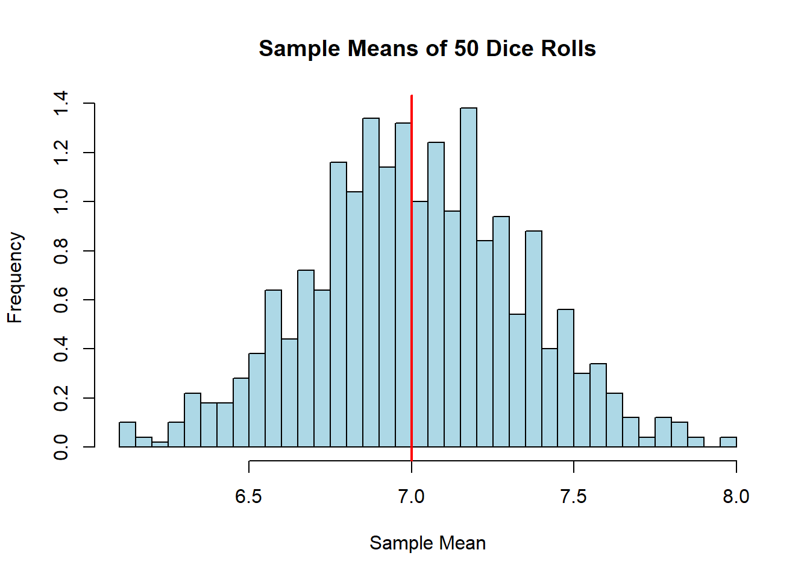
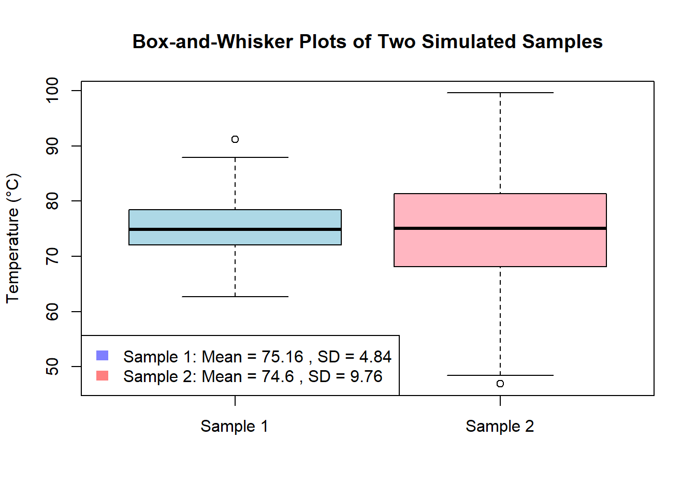
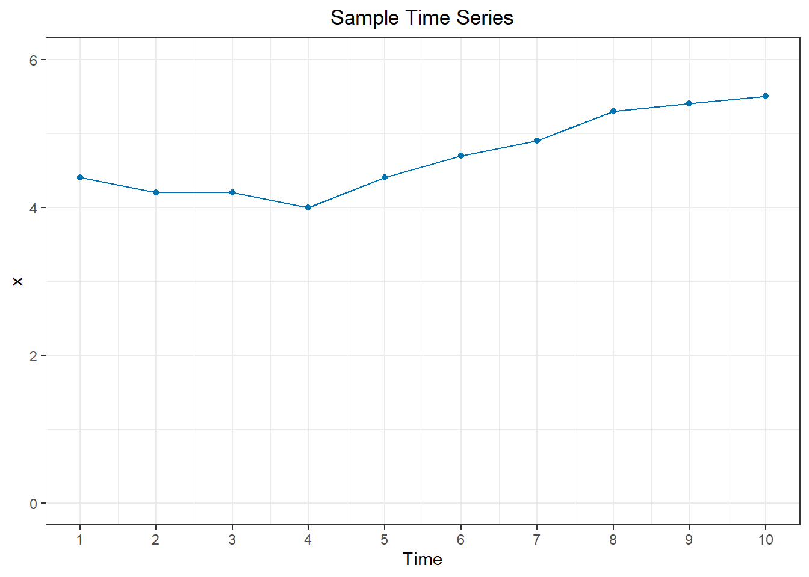
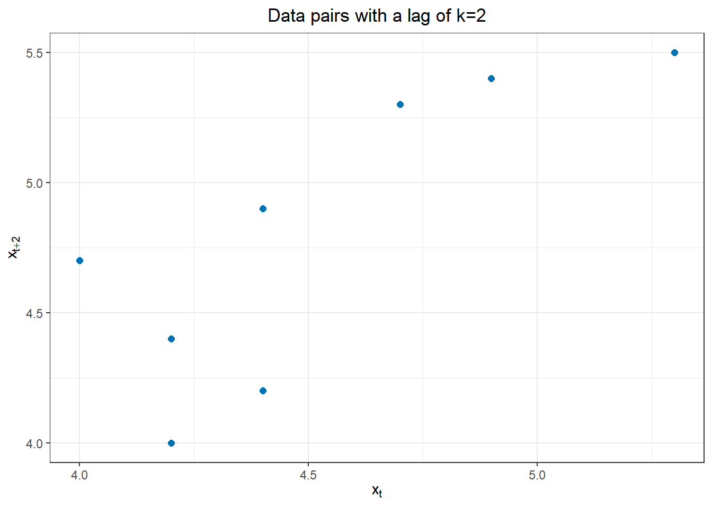
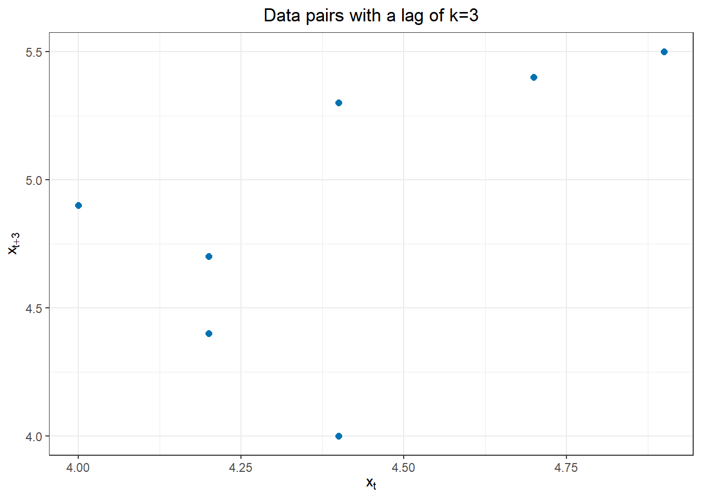
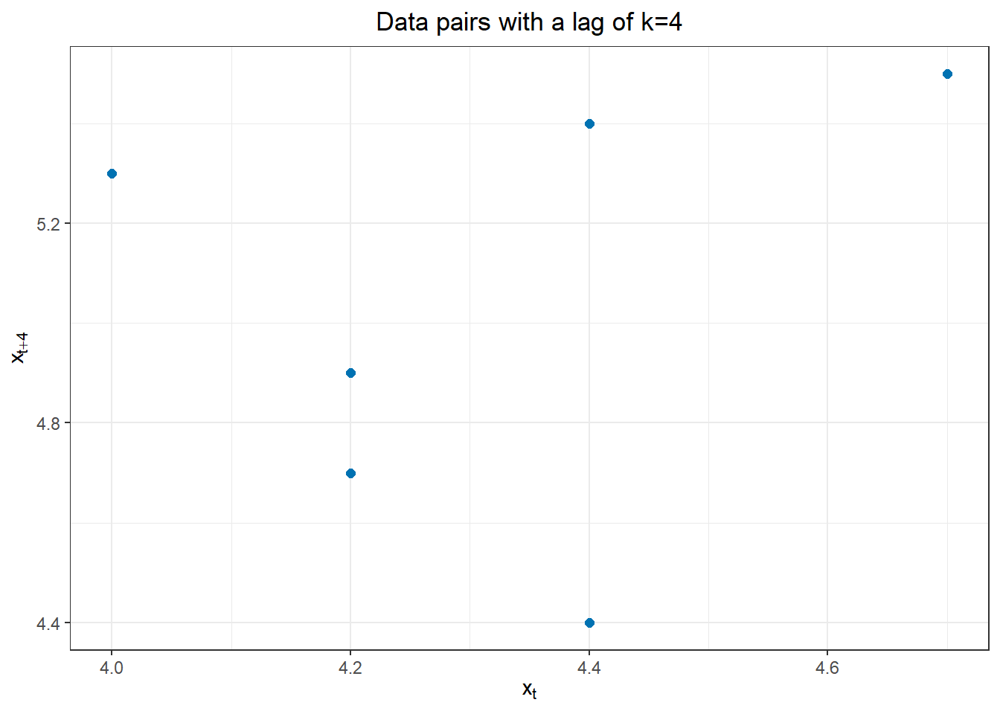
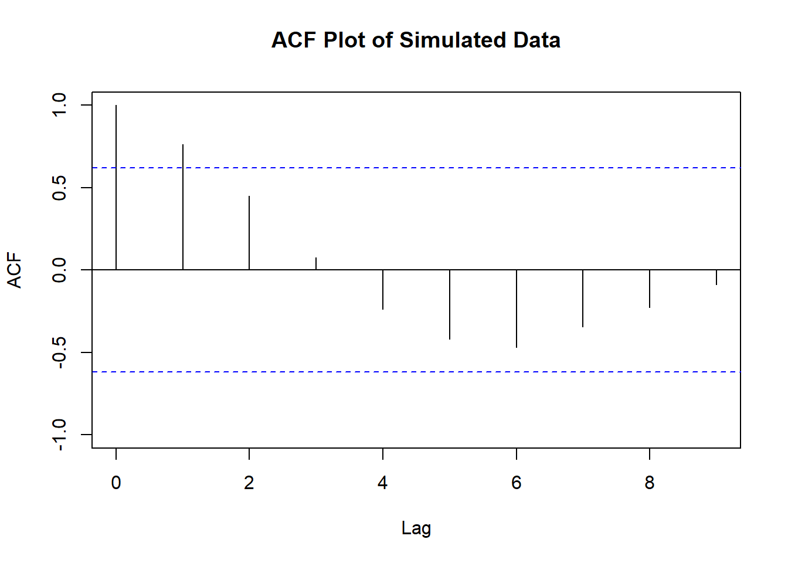

Loading required package: pacmanSample Statistics and Correlation
Chapter 2
1.1 Functions & Stuff
2 Chapter 2
2.1 Motivate the chapter. Why does it matter?
2.1.1 Connect this with Ch1.1
2.2 Differentiate population and sample properties and statistics
Time series are the realizations of uncertain events and processes. Uncertainty and randomness are inherent to human experience and natural phenomena. Scholars have developed a framework to study uncertainty, so before working with time series, we must build the vocabulary and tools necessary to understand and apply the science of uncertainty and risk.
Random Variables and Stochastic Processes
A random variable is a numerical quantity whose value is determined by the outcome of a random process. A stochastic or random process is a collection of random variables that represent the evolution of a stochastic system over time. In time series analysis, a stochastic process can describe how a variable, such as daily temperature, changes over time. Each temperature measurement is a value of the random variable daily temperature. A sequence of temperature readings from the same location represents a time series. Each time series is a realization of the stochastic process, one of a potentially infinite number of sequences that could have been measured. In the case of daily temperatures, the stochastic process generating the data is governed by the natural processes of the earth’s weather: sun radiation, earth’s rotation, ocean temperatures, and wind patterns, among others.
[Insert here a simulated temperature series and it’s ensemble]
Population and Sample
The definitions of population and sample differentiate between all the possibilities of a stochastic process and our measurements. In statistics, a population refers to the entire set of individuals, observations, or values possible in a group of interest. It includes every possible member of the group we are studying. For example, if we are studying the heights of adult men in a country, the population would include the heights of all adult men in that country. Or if you are studying the roll of a die, it represents all the possible numerical values a die can take.
In the context of time series analysis, the concept of a population is called the ensemble. An ensemble represents the collection of all possible time series that a given stochastic process could generate. Each time series in the ensemble is a realization of the underlying process. For instance, consider the study of the daily temperatures in a city over ten years. The ensemble, or population, includes all possible sequences of daily temperatures that could be recorded over ten years.
A sample is a subset of the population selected for analysis. In the context of time series, a time series is a sample from its ensemble. In modeling daily temperature readings, a single sequence of daily temperatures observed over ten years in a specific city is a sample from the population (ensemble) of all possible temperature sequences that could have occurred under similar conditions. Unlike sampling in cross-sectional analysis, the researcher does not direct or influence the sampling process in time series analysis; the time series measured is the only sample obtained, and there is no way to repeat the process or influence it in any way.
Parameters and Statistics
Parameters are features that describe an entire population, and the associated numerical values provide a summary measure of some aspect of the population. For example, the mean height of all adult men in a country is a parameter. In time series analysis, parameters include the mean, variance, and autocorrelation function of the entire ensemble of time series. Because parameters encompass the entire population, they are often denoted by Greek letters, such as \(\mu\) for the population mean and \(\sigma^2\) for the population variance.
Statistics, on the other hand, are features that describe a sample drawn from the population. Unlike parameters, statistics can vary depending on which individuals are included in the sample. For example, the mean height of a sample of 1,000 men selected from the population is a statistic. The sample mean from a second sample of 1,000 men will differ from the first sample. We expect the two sample means to be numerically similar because they are drawn from the same population but are unlikely to be the same. In time series analysis, statistics include the sample mean, sample variance, and sample autocorrelation function of a single time series realization. Statistics are typically denoted by Latin letters, such as \(\bar{x}\) for the sample mean and \(s^2\) for the sample variance.
Statistics, on the other hand, are features that describe a sample drawn from the population. Unlike parameters, statistics can vary depending on which individuals are included in the sample. For example, the mean height of a sample of 1,000 men selected from the population is a statistic. The sample mean from a second sample of 1,000 men will differ from the first sample. We expect the two sample means to be numerically similar because they are drawn from the same population but are unlikely to be the same. In time series analysis, statistics include the sample mean, sample variance, and sample autocorrelation function of a single time series realization. Statistics are typically denoted by Latin letters, such as \(\bar{x}\) for the sample mean and \(s^2\) for the sample variance.
2.3 Contrast parameters and statistics, estimators and estimates
2.3.1 Estimators and Estimates
An estimator is a rule or formula used to estimate a population parameter based on sample data. Estimators are functions of the observed data and are used to infer the values of unknown parameters. For example, the sample mean is an estimator used to estimate the population mean. There are preferred estimators for certain parameters; they are popular and usually spoken of as the only ones available, but note that there are many estimators for each parameter, and which one we use might depend on the context.
For example, consider the mean of a population as the parameter we aim to estimate. Two common estimators for this parameter are the sample and trimmed mean. The sample mean is calculated by summing all the values in a sample and then dividing by the number of values in that sample. It is a simple and widely used estimator for the population mean. On the other hand, the trimmed mean is calculated by removing a certain percentage of the smallest and largest values from the sample and then computing the mean of the remaining values. This estimator is particularly useful when the data contains outliers that might skew the sample mean. For instance, a 10% trimmed mean involves removing the lowest 10% and the highest 10% of the data points and then taking the mean of the remaining 80%. Both the sample mean and the trimmed mean aim to estimate the population mean but might yield different results depending on the presence of outliers or the distribution of the data.
An estimate is the numerical value obtained from an estimator when applied to a specific sample. For instance, if we calculate the mean of a sample of data points, this calculated value is the estimate of the population mean.
2.3.2 Probabililty distributions of a Population and the Sampling Distribution of Estimators.
To illustrate and differentiate estimators and estimates, consider the outcomes of rolling two dice and summing the results.
The population in this case is the set of all possible outcomes of the sum of the two dice rolls, which ranges from 2 to 12. Each possible outcome has a theoretical probability associated with it, forming the probability distribution of the population. For example, there is only one way to roll a sum of 2 (both dice showing 1), but there are six ways to roll a sum of 7 (such as 1 and 6, 2 and 5, etc.). The probabilities for each possible sum are as follows:
- Sum of 2: Probability = 1/36
- Sum of 3: Probability = 2/36
- Sum of 4: Probability = 3/36
- Sum of 5: Probability = 4/36
- Sum of 6: Probability = 5/36
- Sum of 7: Probability = 6/36
- Sum of 8: Probability = 5/36
- Sum of 9: Probability = 4/36
- Sum of 10: Probability = 3/36
- Sum of 11: Probability = 2/36
- Sum of 12: Probability = 1/36
Using these probabilities, the expected value, or mean, of the population can be calculated as
\[\mu = \sum_{i} X_i \cdot P(X_i)\]
where \(X_i\) is each value that the the random variable \(X\) can take, and \(P(X_i)\) is the probability that \(X\) takes the value \(X_i\). The expected value is a weighted average of all the possible values of \(X\) weighted by how often they occur in the population.
In the case of the sum of two dice rolls, the expected value is
\[\mu = \sum_{X_i=2}^{12} X_i \cdot P(X_i)\]
\[\mu = 2 \cdot \frac{1}{36} + 3 \cdot \frac{2}{36} + 4 \cdot \frac{3}{36} + 5 \cdot \frac{4}{36} + 6 \cdot \frac{5}{36} + 7 \cdot \frac{6}{36} + 8 \cdot \frac{5}{36} + 9 \cdot \frac{4}{36} + 10 \cdot \frac{3}{36} + 11 \cdot \frac{2}{36} + 12 \cdot \frac{1}{36}\]
\[\mu = \frac{252}{36} = 7\]
Which interpreted means that when we draw from the population at random, we expect to roll a seven when we add the value of two dice. Seven is not the only outcome, but its the most likely outcome among all the possibilities
In practice, the population parameter \(\mu\) is often unobserved or unknown. An estimator of \(\mu\) is the sample mean \(\bar x\)
\[ \bar{x} = \frac{1}{n} \sum_{i=1}^{n} x_i \]
where \(n\) is the total number of observations in the sample, and \(x_i\) represents each individual observation in the sample.
Suppose we record the results of rolling the two dice 50 times. This set of 50 outcomes is a sample from the population distribution. We repeat this process multiple times, each time calculating the sample mean,
\[ \bar{x} = \frac{1}{n} \sum_{i=1}^{n} x_i = \frac{1}{50} \sum_{i=1}^{50} x_i \]
the code below simulates 1000 samples of 50 observations each and creates a histogram of the sample means.The red line indicates the theoretical population mean (7).
A histogram is a graphical representation of the distribution of numerical data. The entire range of data is divided into a series of intervals or bins. Each bin represents a specific range of data values. The width of each bin is often the same, but this is not a strict requirement. Each bin is represented by a bar, and the height of the bar corresponds to the frequency (count) or relative frequency (probability) of data points that fall within the bin.
The x-axis (horizontal axis) represents the variable being measured. It is divided into intervals that correspond to the bins. The y-axis (vertical axis) represents the frequency or relative frequency of data points within each bin. For a probability histogram, the y-axis represents the probability density.
Code
# Simulate rolling two dice 50 times and calculate sample means
set.seed(123) # For reproducibility
num_samples <- 1000
sample_size <- 50
sample_means <- numeric(num_samples)
for (i in 1:num_samples) {
sample_rolls <- sample(2:12, size = sample_size, replace = TRUE, prob = c(1, 2, 3, 4, 5, 6, 5, 4, 3, 2, 1) / 36)
sample_means[i] <- mean(sample_rolls)
}
# Plot histogram of sample means and theoretical population mean
hist(sample_means, breaks = 30, probability = TRUE, col = "lightblue",
main = "Sample Means of 50 Dice Rolls", xlab = "Sample Mean", ylab = "Frequency")
abline(v = 7, col = "red", lwd = 2) # Theoretical population mean
The estimator we used to calculate the estimates is the same, but each sample has a different samples mean (estimate). Because each sample is a subset of the population, each sample mean contains information about the population mean. However, most of the 1000 estimates are not equal to the population mean.
In most situations, the population parameters are unknown, but we can use the distribution of sample estimates to infer their location. The histogram above represents the sampling distribution of sample means. In general, all estimators have a sampling distribution; statistical inference relies on these distributions to estimate population parameters or conduct statistical tests.
The following section will introduce four parameters critical to studying time series and their respective estimators. Understanding what the parameters communicate will help us characterize the various stochastic processes that generate time series. The respective estimators will provide estimates used as evidence to match the time series we observe with the underlying stochastic processes likely to have generated it. Successful forecasting and inference rely on correctly using estimates to narrow down which stochastic process we are modeling.
2.4 Calculate a sample standard deviation
2.4.1 Understanding and Calculating the Sample Standard Deviation
An important feature of population is the variation of the random outcomes. One of the key measures of variability is the standard deviation.
1.1 Define Population and Sample Variance and Standard Deviation
Population Variance and Standard Deviation
Population variance \(\sigma^2\) is a measure of how data points in a population are spread out around the mean. It is calculated as the average of the squared differences from the mean. Mathematically, it is expressed as
\(\sigma^2 = \frac{1}{N} \sum_{i=1}^{N} (X_i - \mu)^2\)
where N is the size of the population, \(X_i\) represents each data point in the population, and \(\mu\) is the population mean
The population standard deviation \(\sigma\) is the square root of the population variance:
\(\sigma = \sqrt{\sigma^2}\)
Sample Variance and Standard Deviation
Sample variance \(s^2\) is used to estimate the population variance from a sample. It is calculated similarly to the population variance but with a slight adjustment (Bessel’s correction) to account for the fact that the sample is only a subset of the population:
\(s^2 = \frac{1}{n-1} \sum_{i=1}^{n} (x_i - \bar{x})^2\)
where \(n\) is the size of the sample, \(x_i\) represents the value of each data point in the sample, \(\bar{x}\) is the sample mean
The sample standard deviation \(s\) is the square root of the sample variance:
\(s = \sqrt{s^2}\)
1.2 Explain the Intuition Behind the Sample Standard Deviation Using a Histogram
To grasp the intuition behind the sample standard deviation, consider a histogram of two samples with different variances.
Code
# Simulate daily temperatures for one year (365 days) with two different standard deviations
set.seed(123) # For reproducibility
temperature_data1 <- rnorm(365, mean = 75, sd = 5) # Sample 1: Mean temperature = 75, standard deviation = 5
temperature_data2 <- rnorm(365, mean = 75, sd = 10) # Sample 2: Mean temperature = 75, standard deviation = 10
# Calculate the sample means and standard deviations
sample_mean1 <- mean(temperature_data1)
sample_sd1 <- sd(temperature_data1)
sample_mean2 <- mean(temperature_data2)
sample_sd2 <- sd(temperature_data2)
# Set x-axis limits to fit 3.5 standard deviations away from the mean on both sides
xlim_range <- range(sample_mean2 - 3.5 * sample_sd2, sample_mean2 + 3.5 * sample_sd2)
# Create histograms
hist(temperature_data1, breaks = 30, probability = TRUE, col = rgb(0, 0, 1, 0.5),
main = "Sample Distribution of Daily Temperature Series",
xlab = "Temperature (°C)", xlim = xlim_range, ylim = c(0, 0.08))
hist(temperature_data2, breaks = 30, probability = TRUE, col = rgb(1, 0, 0, 0.5), add = TRUE)
# Add vertical lines at the sample means
abline(v = sample_mean1, col = "blue", lwd = 2, lty = 2)
abline(v = sample_mean2, col = "red", lwd = 2, lty = 2)
# Display sample means and standard deviations on the plot
graphics::legend("topright", legend = c(paste("Sample 1: Mean =", round(sample_mean1, 2), ", SD =", round(sample_sd1, 2)),
paste("Sample 2: Mean =", round(sample_mean2, 2), ", SD =", round(sample_sd2, 2))),
fill = c(rgb(0, 0, 1, 0.5), rgb(1, 0, 0, 0.5)), border = NA)
This code generates superimposed histograms of two simulated daily temperature series, one with a standard deviation of 5 and the other with a standard deviation of 10. The blue histogram represents the sample with a standard deviation of 5, and the red histogram represents the sample with a standard deviation of 10. The dashed lines indicate the sample means of the samples by color.
The spread of the data points around the mean gives us an idea of the variability. The red histogram shows a broader spread, indicating higher variability. The blue histogram shows a narrower spread, indicating lower variability.
In the time series context, the population variance quantifies the variability or dispersion of data points around the mean for the entire ensemble. By calculating the sample variance of a time series, we can assess the extent to which the observed values deviate from the average value over the observed time frame. This measure helps identify the volatility and stability of the time series, revealing patterns and trends. Understanding the sample variance allows us to make informed inferences about the underlying stochastic process and accurately model and forecast future values.
1.3 Explain a Box-and-Whisker Plot
A box-and-whisker plot (or box plot) is another visualization tool that illustrates the distribution and variability of a sample. It provides a summary of the data based on five key statistics: minimum, first quartile (Q1), median (Q2), third quartile (Q3), and maximum.
Code
# Create box-and-whisker plots
boxplot(temperature_data1, temperature_data2,
names = c("Sample 1", "Sample 2"),
main = "Box-and-Whisker Plots of Two Simulated Samples",
ylab = "Temperature (°C)", col = c("lightblue", "lightpink"))
# Display sample means on the plot
graphics::legend("bottomleft", legend = c(paste("Sample 1: Mean =", round(sample_mean1, 2), ", SD =", round(sample_sd1, 2)),
paste("Sample 2: Mean =", round(sample_mean2, 2), ", SD =", round(sample_sd2, 2))),
fill = c(rgb(0, 0, 1, 0.5), rgb(1, 0, 0, 0.5)), border = NA)
This code generates two box-and-whisker plots of the simulated daily temperature data. The box represents the interquartile range (IQR), showing the spread of the middle 50% of the data.The median line inside the box indicates the median temperature. The whiskers extend to the smallest and largest values within 1.5 times the IQR from Q1 and Q3. Any data points that fall outside these whiskers, known as outliers, are considered to be significantly different from the rest of the data and are plotted individually. The red dashed line represents the sample mean temperature, highlighting its position relative to the median and the overall data distribution.
2.5 Calculate sample covariance and correlation coefficient.
2.5.1 Understanding Covariance and Correlation
Variance measures the variability of one random variable. In time series, we are often interested in how two random variables “move together.” Covariance and correlation measure the linear co-movements between two random variables, and sample covariance and correlation are key statistics for inferring relationships between variables. Because complex systems generate most of the data collected today, statistics that illuminate the connections between variables are the foundation of quantitative science and our understanding of complex phenomena.
Covariance and Sample Covariance
Covariance
Covariance is a measure of the degree to which two variables change together. If the variables tend to increase and decrease simultaneously, the covariance will be positive. If one variable tends to increase while the other decreases, the covariance will be negative. Mathematically, the population covariance between two variables \(X\) and \(Y\) is defined as:
\[\text{Cov}(X, Y) = \frac{1}{N} \sum_{i=1}^{N} (X_i - \mu_X)(Y_i - \mu_Y)\]
where \(N\) is the size of the population, \(X_i\) and \(Y_i\) are the individual data points of \(X\) and \(Y\), and \(\mu_X\) and \(\mu_Y\) are the means of \(X\) and \(Y\).
Sample Covariance
Sample covariance is used to estimate the population covariance from a sample. It is calculated similarly to population covariance but uses sample data and includes Bessel’s correction to account for the sample size. The sample covariance between two variables \(X\) and \(Y\) is defined as:
\[s_{XY} = \frac{1}{n-1} \sum_{i=1}^{n} (x_i - \bar{x})(y_i - \bar{y})\]
where \(n\) is the size of the sample, \(x_i\) and \(y_i\) are the individual sample data points of \(X\) and \(Y\) , and \(\bar{x}\) and \(\bar{y}\) are the sample means of \(X\) and \(Y\).
Correlation and Sample Correlation Coefficient
Covariance provides a numerical expression of the magnitude of the joint variability of two variables using their units measure. For example, in a study of the relationship between height in centimeters and weight in kilograms, the covariance will have units of centimeters-kilograms. This unit dependency can make it difficult to interpret the strength of the relationship, especially when comparing covariance statistics across data sets with different units. Additionally, the scale of covariance can vary widely depending on the variability of the data, complicating its interpretation. Correlation standardizes the covariance measure, providing a dimensionless number that quantifies the strength and direction of the linear relationship between two variables. The population correlation coefficient \(\rho\) between two variables \(X\) and \(Y\) is defined as:
\[\rho_{XY} = \frac{\text{Cov}(X, Y)}{\sigma_X \sigma_Y}\]
where \(\text{Cov}(X, Y)\) is the covariance between \(X\) and \(Y\), and \(\sigma_X\) and \(\sigma_Y\) are the standard deviations of \(X\) and \(Y\). The correlation coefficient ranges from -1 to 1. A correlation of 1 indicates a perfect positive linear relationship, while a correlation of -1 indicates a perfect negative linear relationship. A correlation of 0 indicates no linear relationship.
Sample Correlation Coefficient
The sample correlation coefficient \(r_{X,Y}\) is the estimator \(\rho_{X,Y}\) and is defined as:
\[r_{XY} = \frac{s_{XY}}{s_X s_Y}\]
where \(s_{XY}\) is the sample covariance between \(X\) and \(Y\), and \(s_X\) and \(s_Y\) are the sample standard deviations of \(X\) and \(Y\).
Interpreting an Estimate of the Sample Correlation Coefficient
For example, consider two time series: daily temperatures and daily ice cream sales. If the sample correlation coefficient, \(r\), between these variables is 0.8, it indicates a strong positive relationship, suggesting that higher temperatures are associated with increased ice cream sales. Conversely, if \(r=-0.8\), it would suggest that higher temperatures are associated with decreased ice cream sales. A correlation value around 0 would indicate that temperature changes have little to no effect on ice cream sales.
2.5.2 Explain the intuition of covariance using a scatter plot
The following simulation explains the intuition behind the estimates for sample covariance and correlation. Please choose the size of the sample and the parameters in the population. The simulation will generate a sample and calculate, step by step, the estimates using the estimators.
2.6 Calculate a sample autocorrelation
2.6.1 Autocovariance and Autocorrelation
As explained in Chapter 1, in cross-sectional analysis, data is collected at one point in time across multiple subjects, such as individuals, countries, company stocks, or bacteria. Sample covariance and correlation are essential statistics used to understand the relationships between variables common to all the subjects. A critical assumption in cross-sectional analysis is the independent sampling of each subject in the population. Intuitively, that means that the selection of each subject in the sample is random or not connected in any systematic way. The violation of independent sampling jeopardizes the validity of the analysis. Suppose there were connections between subjects created by the sampling process; sample covariance and correlation estimates would pick up that connection alongside the population relationship the analysis was supposed to estimate. The sampling interconnections between subjects will muddle the estimates for the population relationships, either increasing or attenuating the magnitude of the relationship, eliminating our confidence in the estimates.
Random sampling is impossible in time series data, which tracks a single subject over multiple periods. Because time series are collected from a single subject, each observation is inherently related to another in the series and not chosen at random. Suppose a time series tracks the height of an individual over time at a monthly frequency. Most of us would find it curious if the height of our subject increased by 10 inches in a month and then decreased by 20 inches the next month. Humans do not grow so quickly, and unless for the loss of limbs, they will not shorten that quickly either. The connection between observations in a sample implies that many of the tools of cross-sectional inference are invalid. Instead of relying on information from multiple subjects, as in cross-sectional analysis, time-series statistics use multiple sequential observations to learn about the subject.
The autocovariance and autocorrelation functions help us characterize the relationships between sequential observations of the same subject. The prefix “auto” comes from a Greek root meaning “self.” Like in cross-sectional analysis, where we exploit variation across subjects to find something common to all the subjects, understanding the temporal relationships in a time series will illuminate the characteristics of the stochastic process that generated the data. The measurement and analysis of autocovariance and the tools that rely on this statistic will be the foundation of most of the analysis taught in the rest of the textbook. Like cross-sectional analysis, meeting the assumptions about the autocovariance structure of the data will be the primary driver in selecting the estimators we choose for our analysis.
2.6.2 Define population and sample autocorrelation
Autocovariance and autocorrelation quantify how values in a time series relate to their past and future values, providing insights into the internal structure and patterns of the data. Because there is a temporal component in these statistics, we specify them as a function of time or lag; so there is not a single estimator of autocorrelation, like covariance, but rather an autocovariance and autocorrelation function, with one estimator for each possible time lag.
Autocovariance
Population autocovariance measures the covariance of a time series with a lagged version of itself for the entire ensemble, or population. It quantifies the degree to which current values of the series are related to its past values. The population autocovariance function at lag \(k\) for a time series \(X_t\) is defined as:
\[\gamma_k =\frac{1}{N} \sum^{N-k}_{t=1}{(X_t - \mu)(X_{t+k} - \mu)}\]
where: \(N\) is the number of observations in the time series, \(X_t\) and \(X_{t+k}\) are the values of the series at time \(t\) and \(t+k\), \(\mu\) is the mean of the time series, and \(k\) is the lag.
The collection of \(\gamma_k\) for all possible lags \(k\) forms the population autocovariance function, or ACVF.
Sample autocovariance is used to estimate the population autocovariance from a time series, not an ensemble. It is calculated similarly to the population autocovariance but uses sample data. The sample autocovariance at lag \(k\) is defined as:
\[\hat{\gamma}_k = c_k =\frac{1}{n} \sum_{t=1}^{n-k} (x_t - \bar{x})(x_{t+k} - \bar{x})\]
where: \(n\) is the number of observations in the sample, \(x_t\) and \(x_{t+k}\) are the sample values at time \(t\) and \(t+k\), \(\bar{x}\) is the sample mean, and \(k\) is the lag
The collection of \(c_k\) for all possible lags \(k\) forms the sample autocovariance function.
Autocorrelation
Population autocorrelation standardizes the measure of autocovariance, providing a dimensionless value that quantifies the strength and direction of the relationship between values in a time series at different lags. The population autocorrelation function at lag \(k\), denoted as \(\rho_k\) is defined as:
\[\rho_k = \frac{\gamma_k}{\gamma_0}\]
where: \(\gamma_k\) is the population autocovariance at lag \(k\), and \(\gamma_0\) is the variance of the time series, or autocovariance at lag zero.
The collection of \(\rho_k\) for all possible lags \(k\) forms the population autocorrelation function, or ACF.
Sample Autocorrelation
Sample autocorrelation is used to estimate the population autocorrelation from a time series. It is defined as:
\[ \hat{\rho}_k= r_k = \frac{c_k}{c_0} = \frac{ \frac{1}{n} \sum\limits_{t=1}^{n-k}(x_t-\bar{x})(x_{t+k}-\bar{x}) }{ \frac{1}{n} \sum\limits_{t=1}^{n}(x_t-\bar{x})^2 } = \frac{ \sum\limits_{t=1}^{n-k}(x_t-\bar{x})(x_{t+k}-\bar{x}) }{ \sum\limits_{t=1}^{n}(x_t-\bar{x})^2 } \]
where: \(c_k\) is the sample autocovariance at lag \(k\), \(c_0\) is the sample variance of the time series, or autocovariance at lag zero.
The collection of \(r_k\) for all possible lags \(k\) forms the sample autocorrelation function.
2.6.3 Explain the intuition of sample autocorrelation using a scatter plot
2.6.4 Interpret an estimate of sample autocorrelation at different lags
The autocovariance and autocorrelation functions are a function of time. Each example that follows will show a scatter plot of a single time series against itself, lagged at different periods. The scatter plot shows the linear relationships between lagged variables and the code below each scatter plot shows the value of the autocovariance and autocorrelation functions for each lag.
This table and chart show ten observations from a simulation.
Code
offset_value <- 1
cov_df <- get_data_for_cov_table(offset = offset_value)
# Obtain the number of data values.
n <- nrow(cov_df)
cov_df %>%
dplyr::select(t, x) %>%
rename("$$ x_t $$"= x) %>%
display_table()| t | $$ x_t $$ |
|---|---|
| 1 | 4.4 |
| 2 | 4.2 |
| 3 | 4.2 |
| 4 | 4.0 |
| 5 | 4.4 |
| 6 | 4.7 |
| 7 | 4.9 |
| 8 | 5.3 |
| 9 | 5.4 |
| 10 | 5.5 |

We will use the sample mean of these data repeatedly. The value of \(\bar{x}\) is:
\[ \bar x = \frac{1}{n} \sum\limits_{t=1}^{n} x_t = \frac{1}{10} \cdot 47 = 4.7 \]
Lag \(k=1\) Sample Autocovariance Function (ACVF), \(c_1\)
The lag \(k=1\) sample ACVF denoted \(c_1\), is defined as
\[ c_1 = \frac{1}{n} \sum\limits_{t=1}^{n-1}(x_t-\bar x)(x_{t+1}-\bar x) \] There are some important details to point out. Starting with the upper limit of the summation operator, \(n-1\). When we shift the series by one unit of time, we reduce the number of observations available for the calculation by one unit; for an illustration, see the table below. The inside of the summation operator there are \(n-1\) values for the expression \((x_t-\bar x)(x_{t+1}-\bar x)\). The summation operator then sums all the products and divides it by the sample size, or the length of the time series.
Intuitively, the autocorrelation coefficient is the average of the product \((x_t-\bar x)(x_{t+1}-\bar x)\). The following table illustrates each step in the calculation.
| t | $$ x_t $$ | $$ x_{t+1} $$ | $$ (x_t-\bar x) $$ | $$ (x_t-\bar x)^2 $$ | $$ (x_{t+1}-\bar x)$$ | $$ (x-\bar x)(x_{t+1}-\bar x) $$ |
|---|---|---|---|---|---|---|
| 1 | 4.4 | 4.2 | -0.3 | 0.09 | -0.5 | 0.15 |
| 2 | 4.2 | 4.2 | -0.5 | 0.25 | -0.5 | 0.25 |
| 3 | 4.2 | 4 | -0.5 | 0.25 | -0.7 | 0.35 |
| 4 | 4 | 4.4 | -0.7 | 0.49 | -0.3 | 0.21 |
| 5 | 4.4 | 4.7 | -0.3 | 0.09 | 0 | 0 |
| 6 | 4.7 | 4.9 | 0 | 0 | 0.2 | 0 |
| 7 | 4.9 | 5.3 | 0.2 | 0.04 | 0.6 | 0.12 |
| 8 | 5.3 | 5.4 | 0.6 | 0.36 | 0.7 | 0.42 |
| 9 | 5.4 | 5.5 | 0.7 | 0.49 | 0.8 | 0.56 |
| 10 | 5.5 | — | 0.8 | 0.64 | — | — |
| sum | 47 | 42.6 | 0 | 2.7 | 0.3 | 2.06 |
In this example, the second variable is \(x_{t+1}\), where \(t>1\). the autocovariance of \(x_t\) and \(x_{t+1}\) is:
\[ c_1 = \frac{1}{n} \sum\limits_{t=1}^{n-1}(x_t-\bar x)(x_{t+1}-\bar x) = \frac{1}{10} \sum\limits_{t=1}^{9}(x_t-\bar x)(x_{t+1}-\bar x) = \frac{1}{10} \cdot 2.06 = 0.206 \]
Visually, the scatter plot below illustrates the relationship between the observed data \(x_t\) and the next observation \(x_{t+1}\). Note that the product \((x_t-\bar x)(x_{t+1}-\bar x)\) is positive for all observations, suggesting a positive linear relationship. However, the magnitude of the relationship is difficult to evaluate give that the statistic is measured in the same units as the observations. The autocorrelation calculated in the next section will highlight the usefulness of a normalized measurement that doesn’t have the unit measurement problem of autocovariance.

Lag \(k=1\) Sample Autocorrelation Function, \(r_1\)
We can compute the autocorrelation of \(x\) with lag 1 as the quotient \(r_1 = \frac{c_1}{c_0}\). We have already determined that \(c_1 = 0.206\). We now compute \(c_0\):
\[ c_0 = \frac{1}{n} \sum\limits_{t=1}^{n-0} (x_t-\bar x)(x_{t+0}-\bar x) = \frac{1}{n} \sum\limits_{t=1}^{n} (x_t-\bar x)^2 = \frac{1}{10} \cdot 2.7 = 0.27 \]
We use \(c_0\) and \(c_1\) to compute \(r_1\). Here are two ways we can compute this value:
\[\begin{align*} r_1 &= \frac{c_1}{c_0} = \frac{ \frac{1}{n} \sum\limits_{t=1}^{9}(x_t-\bar x)(x_{t+1}-\bar x) }{ \frac{1}{n} \sum\limits_{t=1}^{10}(x_t-\bar x)^2 } = \frac{ \frac{1}{10} \cdot 2.06 }{ \frac{1}{10} \cdot 2.7 } = \frac{0.206}{0.27} = 0.763 \\ &= \frac{ \sum\limits_{t=1}^{9}(x_t-\bar x)(x_{t+1}-\bar x) }{ \sum\limits_{t=1}^{10}(x_t-\bar x)^2 } = \frac{2.06}{2.7} = 0.763 \end{align*}\]Because we are using variance of \(x_t\) as the denominator in the ratio, the autocorrelation \(r_1\) is bounded in the range \([-1,1]\), with zero suggesting no linear relationship. We can evaluate the strength and magnitude of the relationship because all autocorrelation estimates have the same range. The value of 0.763 suggests a strong positive correlation between between \(x_t\) and \(x_{t+1}\).
Lag \(k=2\) Sample Autocorrelation Function, \(r_2\)
| t | $$ x_t $$ | $$ x_{t+2} $$ | $$ x_t-\bar x $$ | $$ (x_t-\bar x)^2 $$ | $$ x_{t+2}-\bar x$$ | $$ (x-\bar x)(x_{t+2}-\bar x) $$ |
|---|---|---|---|---|---|---|
| 1 | 4.4 | 4.2 | -0.3 | 0.09 | -0.5 | 0.15 |
| 2 | 4.2 | 4 | -0.5 | 0.25 | -0.7 | 0.35 |
| 3 | 4.2 | 4.4 | -0.5 | 0.25 | -0.3 | 0.15 |
| 4 | 4 | 4.7 | -0.7 | 0.49 | 0 | 0 |
| 5 | 4.4 | 4.9 | -0.3 | 0.09 | 0.2 | -0.06 |
| 6 | 4.7 | 5.3 | 0 | 0 | 0.6 | 0 |
| 7 | 4.9 | 5.4 | 0.2 | 0.04 | 0.7 | 0.14 |
| 8 | 5.3 | 5.5 | 0.6 | 0.36 | 0.8 | 0.48 |
| 9 | 5.4 | — | 0.7 | 0.49 | — | — |
| 10 | 5.5 | — | 0.8 | 0.64 | — | — |
| sum | 47 | 38.4 | 0 | 2.7 | 0.8 | 1.21 |
The autocovariance of \(x_t\) and \(x_{t+2}\) is:
\[ c_2 = \frac{1}{n} \sum\limits_{t=1}^{n-2}(x_t-\bar x)(x_{t+2}-\bar x) = \frac{1}{10} \sum\limits_{t=1}^{8}(x_t-\bar x)(x_{t+2}-\bar x) = \frac{1}{10} \cdot 1.21 = 0.121 \]
We use \(c_0\) and \(c_2\) to compute \(r_2\). Here are two ways we can compute this value:
\[\begin{align*} r_2 &= \frac{c_2}{c_0} = \frac{ \frac{1}{n} \sum\limits_{t=1}^{8}(x_t-\bar x)(x_{t+2}-\bar x) }{ \frac{1}{n} \sum\limits_{t=1}^{10}(x_t-\bar x)^2 } = \frac{ \frac{1}{10} \cdot 1.21 }{ \frac{1}{10} \cdot 2.7 } = \frac{0.121}{0.27} = 0.4481 \\ &= \frac{ \sum\limits_{t=1}^{8}(x_t-\bar x)(x_{t+2}-\bar x) }{ \sum\limits_{t=1}^{10}(x_t-\bar x)^2 } = \frac{1.21}{2.7} = 0.4481 \end{align*}\]Notice that the number of elements inside the summation operator is \(n-2=8\). As we increase the lag by one, the number of products \((x_t - \bar{x})(x_{t+2} - \bar{x})\) is reduced by \(k=2\). For an illustration, please see the table above. The value of 0.4481 suggests a positive correlation between between \(x_t\) and \(x_{t+2}\), but one that is much weaker than the autocorrelation between \(x_t\) and \(x_{t+1}\).
The figure below illustrates the relationship between \(x_t\) and \(x_{t+2}\). Please compare this scatter plot with the one for lag \(k=1\) and understand the graphical differences that illustrate the difference in the magnitude of the sample autocorrelation estimates.

Lag \(k=3\) Sample Autocorrelation Function, \(r_3\)
| t | $$ x_t $$ | $$ x_{t+3} $$ | $$ x_t-\bar x $$ | $$ (x_t-\bar x)^2 $$ | $$ x_{t+3}-\bar x$$ | $$ (x-\bar x)(x_{t+3}-\bar x) $$ |
|---|---|---|---|---|---|---|
| 1 | 4.4 | 4 | -0.3 | 0.09 | -0.7 | 0.21 |
| 2 | 4.2 | 4.4 | -0.5 | 0.25 | -0.3 | 0.15 |
| 3 | 4.2 | 4.7 | -0.5 | 0.25 | 0 | 0 |
| 4 | 4 | 4.9 | -0.7 | 0.49 | 0.2 | -0.14 |
| 5 | 4.4 | 5.3 | -0.3 | 0.09 | 0.6 | -0.18 |
| 6 | 4.7 | 5.4 | 0 | 0 | 0.7 | 0 |
| 7 | 4.9 | 5.5 | 0.2 | 0.04 | 0.8 | 0.16 |
| 8 | 5.3 | — | 0.6 | 0.36 | — | — |
| 9 | 5.4 | — | 0.7 | 0.49 | — | — |
| 10 | 5.5 | — | 0.8 | 0.64 | — | — |
| sum | 47 | 34.2 | 0 | 2.7 | 1.3 | 0.2 |
Note that the column with the product \((x_t - \bar{x})(x_{t+3} - \bar{x})\) has positive, negative, and zero values. Their average \(r_3\) is close to zero, suggesting a very weak or non-existent linear relationship at lag \(k=3\) The estimates for the autocovariance and autocorrelation are \(c_3 = \dfrac{0.2}{10} = 0.02\) and \(r_3 = \dfrac{0.02}{0.27} =0.0741\).
The figure below illustrates the correlations between \(x_t\) and \(x_{t+3}\). Please compare it to the prior scatter plots to understand the intuition behind the magnitude of the estimate \(r_3\)

Lag \(k=4\) Sample Autocorrelation Function, \(r_4\)
| t | $$ x_t $$ | $$ x_{t+4} $$ | $$ x_t-\bar x $$ | $$ (x_t-\bar x)^2 $$ | $$ x_{t+4}-\bar x$$ | $$ (x-\bar x)(x_{t+4}-\bar x) $$ |
|---|---|---|---|---|---|---|
| 1 | 4.4 | 4.4 | -0.3 | 0.09 | -0.3 | 0.09 |
| 2 | 4.2 | 4.7 | -0.5 | 0.25 | 0 | 0 |
| 3 | 4.2 | 4.9 | -0.5 | 0.25 | 0.2 | -0.1 |
| 4 | 4 | 5.3 | -0.7 | 0.49 | 0.6 | -0.42 |
| 5 | 4.4 | 5.4 | -0.3 | 0.09 | 0.7 | -0.21 |
| 6 | 4.7 | 5.5 | 0 | 0 | 0.8 | 0 |
| 7 | 4.9 | — | 0.2 | 0.04 | — | — |
| 8 | 5.3 | — | 0.6 | 0.36 | — | — |
| 9 | 5.4 | — | 0.7 | 0.49 | — | — |
| 10 | 5.5 | — | 0.8 | 0.64 | — | — |
| sum | 47 | 30.2 | 0 | 2.7 | 2 | -0.64 |
At lag \(k=4\) the number of products \((x_t - \bar{x})(x_{t+4} - \bar{x})\) is only six. Note that a majority are negative. The estimates for the autocovariance and autocorrelation are \(c_4 = \dfrac{-0.64}{10} = -0.064\) and \(r_4 = \dfrac{-0.064}{0.27} =-0.237\). For most purposes, this autocorrelation estimate is not practically significant, there is no linear relationship at lag \(k=4\). The figure below illustrates the correlations between \(x_t\) and \(x_{t+4}\).

The autocovariance and autocorrelation functions are crucial tools in time series analysis, as they measure how a time series relates to its past values at different lags. Autocovariance quantifies the covariance between a time series and its lagged version, while autocorrelation standardizes this measure, providing a dimensionless value that indicates the strength and direction of the relationship. Both functions are dependent on the lag and illustrating the temporal relationship between the variables involves the analysis of multiple lags. The next section will introduce the correlogram, a single chart that shows the temporal relationships of a time series at many lags simultaneously.
Define a Correlogram
A correlogram, also known as an autocorrelation plot, visually represents the autocorrelation coefficients of a time series for different lags. This graphical tool helps identify patterns, trends, and the extent of correlations within the data over time. The table below summarizes the ACF values calculated in the previous section and five additional lags.
| 0 | 1 | 2 | 3 | 4 | 5 | 6 | 7 | 8 | 9 |
|---|---|---|---|---|---|---|---|---|---|
| 1 | 0.763 | 0.448 | 0.074 | -0.237 | -0.419 | -0.47 | -0.344 | -0.226 | -0.089 |
Create a correlogram
The correlogram below consists of several key components. The primary feature is the display of autocorrelation coefficients for different lags; compare them to the table above. Each bar in the correlogram represents the correlation coefficient at a specific lag, with values ranging from -1 to 1. Values close to 1 indicate a strong positive correlation, values close to -1 indicate a strong negative correlation, and values around 0 suggest no significant correlation. The x-axis of the correlogram represents the lag values, typically starting from lag 0 (the correlation of the series with itself) and extending to higher lag values. Each lag value indicates the time shift applied to the series for computing the autocorrelation.
Code
acf(df$x, plot=TRUE,
type = "correlation",
main = "ACF Plot of Simulated Data",
ylim = c(-1, 1)
)
Correlograms include confidence intervals, shown as dashed horizontal lines. These intervals help assess the statistical significance of the autocorrelation coefficients. If a bar extends beyond the confidence interval, the autocorrelation at that lag is considered statistically significant. The zero line, or baseline, indicates zero correlation. Bars extending above or below this line show positive or negative correlations, respectively.
The statistical significance decision rule involves evaluating a hypothesis tests with each autocorrelation coefficient, one at a time. The hypothesis test uses the null hypothesis \(H_0: \rho_k = 0\) which states that there is no autocorrelation in the time series at a given lag. The alternative hypothesis \(H_1: \rho_k \neq 0\) states that there is significant autocorrelation at a given lag. We assume that the data follows a normal distribution centered around the value of the null hypothesis. If a autocorrelation coefficient lies outside the interval, we reject the null hypothesis for that lag, concluding that there is significant autocorrelation at that lag. If the coefficient lies within the interval, we fail to reject the null hypothesis, indicating no significant autocorrelation.
To create the confidence interval, first choose a significance level \(\alpha\), the default in R is 0.05. For large samples, the confidence intervals for \(\alpha=0.05\) are \(0 \pm \frac{\alpha_c}{\sqrt{n}}\), where \(n\) is the number of observations in the time series and \(\alpha_c\) is the test’s critical value. For large samples, the critical value \(\alpha_c=1.96\) corresponds to a 95% confidence level using the standard normal distribution.
Based on the simulated data, the autocorrelation \(r_1\) is the only statistically significant temporal relationship. The value of \(r_0\) is always 1 because it represents the correlation of the time series with itself and should be ignored. The estimates \(r_5\) and \(r_6\) are numerically large, suggesting a relationship at lags \(k=5\) and \(k=6\), but neither satisfy the single hypothesis test for each lag and are not statistically different from zero.
There are two key points related to hypothesis testing that need to be highlighted. First, the significance level, \(\alpha\), represents the probability of making a Type I error, or false positive. A Type I error occurs when the null hypothesis is true, but we incorrectly reject it. If \(\alpha=0.05\), approximately five percent of hypothesis tests will be false positives. In correlograms with many lags, around five percent of autocorrelation coefficients will extend beyond the confidence interval thresholds. Additionally, it’s likely that the estimates \(r_k\) are correlated, so adjacent estimates might fall in patterns, making interpretation of the underlying phenomenon more difficult. We don’t know which estimates are false positives, so the investigator needs to be careful when making statements about the significance of each estimate. Remember, in statistics we are never completely certain.
Second, statistically significant estimates might not be practically significant. As the number of observations increase the confidence interval shrinks as the standard error \(\pm \frac{1.96}{\sqrt{n}}\) tends to zero. Estimates of autocorrelation coefficients that are close to zero in magnitude might be statistically significant in this case. As previously stated, five percent of the estimates will be false positives, so a practical significance rule is to report statistically significant estimates that are large in magnitude. Practically significance can be justified based on a feature of autocorrelation coefficients. The expression \(r_k^2\) represents how much of the variation in \(x_t\) is explained in the linear dependency between \(x_t\) on \(x_k\). For estimates that are small in magnitude the explanatory power of the relationship will be diminutive rendering the estimate of no practical consequence.
[insert here the waves time series from the textbook]
In this example many estimates are statistically significant. In a chart of 25 lags approximately one estimate will be a false positive. Take \(r_17\approx0.1\) for example, \(r_{17}^2\approx0.01\) so only about 1% of the variation in \(x_t\) is explained by the linear relationship between \(r_t\) and \(r_{t+17}\). While \(r_{17}\) is statistically significant it fails the practical significance test. We can’t know whether \(r_{17}\) is a false positive, but it is not worth reporting regardless.
The pattern of estimates at adjacent lags suggest a correlation between them. This correlation make the interpretation of the individual estimates difficult since it’s clear the magnitude of \(r_4\) is linked to the magnitude of \(r_3\). The next chapter will introduce the idea of trends and seasonality in time series. Trends and seasonality are relationships in sequential observations that we can estimate and account for, reducing the correlation between the time periods and allowing us to interpret autocorrelation estimates easier.